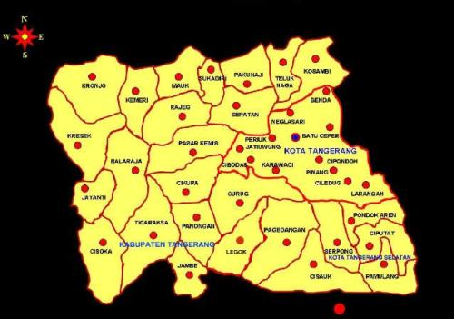

Sejarah
Berdirinya Kota Tangerang tidak lepas dari sejarah perjuangan
Kesultanan Banten melawan Kolonialisme Belanda. Nama “Tangerang”
yang menunjuk kepada suatu daerah yang berada di bantaran sungai
Cisadane, yang dahulu dikenal dengan nama Untung Jawa, lahir dari
beberapa kejadian pada masa lampau hingga akhirnya resmi disebut
“TANGERANG”
Wisata
Tangerang merupakan salah satu kota metropolitan yang ada di
Indonesia. Tergolong kota besar bukan berarti tempat ini tidak
memiliki tempat wisata yang bisa Anda kunjungi. Karena konsep dari
tempat wisata bukan hanya merupakan tempat yang berhubungan
dengan alam saja.
Geografis

Letak Geografis. Letak Kota Tangerang Secara gafis Kota Tangerang
terletak pada posisi 106 36 - 106 42 Bujur Timur (BT) dan 6 6 - 6
Lintang Selatan (LS). ... Letak Kota Tangerang tersebut sangat
strategis karena berada di antara Ibukota Negara DKI Jakarta
dan Kabupaten Tangerang.
Kuliner
Di Kota Tangerang banyak daerah, tetapi yang menjadi pusat kuliner
adalah daerah pasar lama. Semua orang sudah sepakat bahwa daerah ini
menjadi destinasi kuliner yang di datangi banyak orang untuk mencari
makan.